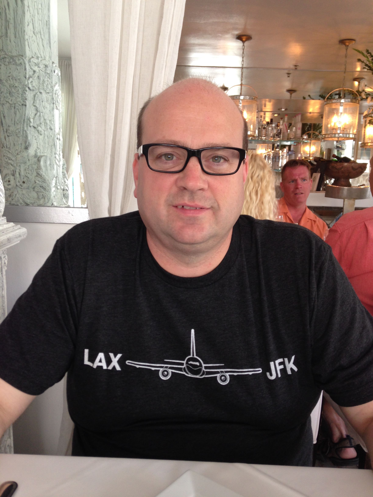

About Me

I work in the Unified Communications IT Field for a large telecommunications company. My team is responsible for the planning and design of the Unified Communications platforms for approximately 160,000 end users across the world, including users in the retail, administrative and contact center functions.
I enjoy using technology to enable people to communicate effectively with each other, individually or in groups. Increasingly, Unified Communications has become a Service over the internet and newer technologies such as WebRTC allow easy embedding of UC functions to company (and individual) websites. My goal in learning Full Stack Development is to utilize this knowledge in pursuit of making the communication of information more accessible.